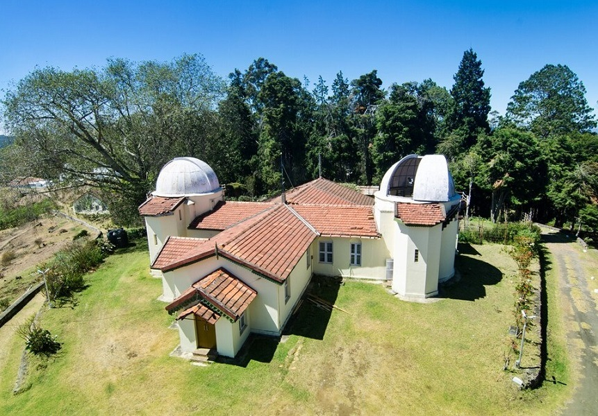

Kodaikanal Solar Observatory is an Indian Institute of Astrophysics (IIA) research facility established in 1899 in the Palani Hills, Tamil Nadu, known for holding the world's longest continuous solar data series and the discovery of the Evershed Effect. It serves as a crucial center for studying solar activity, its impact on Earth's climate, and space weather. The observatory is also open to the public, featuring a museum with displays on solar phenomena and offering night skywatching sessions.

Key Aspects:
- Institution: It is owned and operated by the Indian Institute of Astrophysics (IIA).
- Location: Situated in the Palani range of hills in Southern India.
- Establishment: Founded in 1899.
- Solar Data: Houses one of the longest continuous records of solar data in the world, vital for multi-wavelength solar studies.
- Evershed Effect: The observatory was the site of the 1909 discovery of the Evershed Effect, a phenomenon of gases flowing across sunspots.
- Purpose: To understand solar activity and its link to Earth's climate and space weather.